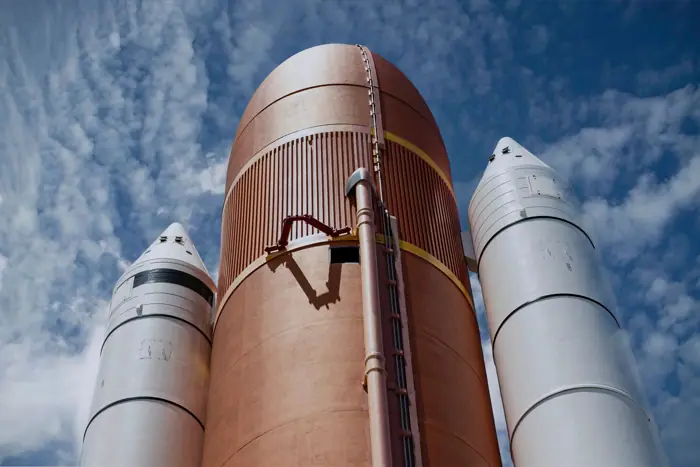

Private spacecraft falls back to Earth after failing to rescue aging NASA telescope

What happened
On 14 March 2024, NASA and its commercial partner announced that a robotic servicing spacecraft, designated “HST‑Serv‑1,” would be launched on a SpaceX Falcon 9 from Cape Canaveral to rendezvous with Hubble. The plan called for the vehicle to deliver a new gyroscope assembly and a replacement ultraviolet camera, extending the telescope’s operational life by at least five years. During a final propulsion system test at the launch site, engineers detected a loss of thrust that could not be compensated by the vehicle’s reaction wheels. The anomaly was traced to a faulty valve in the main engine’s propellant feed line. Because the issue could not be rectified in the remaining time before launch, the decision was made to postpone the mission and to destroy the spacecraft in a controlled de‑orbit over the Pacific Ocean. No debris survived the re‑entry, and the loss of HST‑Serv‑1 left the Hubble servicing plan on hold.
NASA’s Goddard Space Flight Center (GSFC) confirmed the anomaly in a statement issued the following day, noting that “the loss of thrust during the second burn prevented the vehicle from achieving the precise velocity required for a safe rendezvous.” The agency also emphasized that the decision to destroy the vehicle was taken to avoid the creation of space debris that could pose a risk to other orbiting assets.
Background and context
Hubble, launched in 1990, has been a cornerstone of astronomical research, producing images that have reshaped our understanding of the universe. Its instruments have been upgraded in four servicing missions (STS‑31, STS‑41, STS‑61, and STS‑82) conducted by NASA’s Space Shuttle program. By 2023, Hubble’s gyroscopes had begun to fail, and its scientific instruments were approaching the end of their design life. A 2019 NASA assessment concluded that a servicing mission could extend Hubble’s life by at least five years, but the high cost and the retirement of the Space Shuttle fleet made a government‑led mission impractical.
Enter the commercial sector. Since the 2010s, private companies have increasingly taken on roles traditionally reserved for government agencies, driven by lower launch costs, rapid development cycles, and the promise of new revenue streams. SpaceX’s Dragon cargo and crew vehicles, Northrop Grumman’s Cygnus, and Astrobotic’s Peregrine are examples of commercial spacecraft designed to perform tasks ranging from resupply to satellite servicing. These companies operate under NASA’s oversight but maintain significant autonomy, creating a new dynamic in how space missions are planned, executed, and regulated.
The HST‑Serv‑1 mission was the culmination of a partnership between NASA and a private firm that had been selected through a competitive solicitation in 2021. The contract, valued at $350 million, included a 10 % contingency for risk mitigation. The spacecraft was designed to carry a robotic arm and a modular service unit, both of which had been tested in ground‑based simulations and on the International Space Station (ISS). Despite these preparations, the propulsion failure underscored the inherent risks of integrating cutting‑edge technology into a high‑stakes mission.
The bigger picture
Debris mitigation and orbital sustainability
The failed rescue attempt not only left Hubble in a precarious position but also raised concerns about debris generation. While HST‑Serv‑1 was destroyed in re‑entry, the failure of the rendezvous could have resulted in a collision with Hubble, potentially creating a cascade of debris. Even a minor collision would have placed Hubble’s orbit in a higher‑risk zone, threatening other satellites and the ISS. The incident has reignited the debate over debris mitigation guidelines, particularly for commercial operators who may not be subject to the same stringent requirements as government missions.
The Outer Space Treaty of 1967 and the United Nations Committee on the Peaceful Uses of Outer Space (COPUOS) have long called for responsible behavior in space, but the rapid expansion of commercial activity has outpaced the development of enforceable regulations. The International Telecommunication Union (ITU) and the International Organization for Standardization (ISO) have issued guidelines, but enforcement remains limited. The HST‑Serv‑1 incident has prompted calls for clearer international standards that address the unique challenges posed by commercial in‑orbit servicing.
Liability and legal frameworks
Who is responsible for the debris, the mission failure, and any subsequent damage? Current space law offers limited guidance on these matters. The Liability Convention of 1972 establishes that a launching state is liable for damage caused by its space objects on the surface of the Earth or to aircraft in flight. However, it does not address liability for damage to other space objects or for debris that remains in orbit. The HST‑Serv‑1 failure has highlighted the need for a comprehensive liability framework that covers both terrestrial and orbital damages, including the potential for commercial operators to be held accountable for failures that threaten other assets.
In the United States, the Federal Aviation Administration (FAA) and NASA share regulatory responsibilities for commercial spaceflight. The FAA’s Office of Commercial Space Transportation (AST) issues launch licenses and oversees safety compliance, while NASA provides technical oversight for missions that involve national assets. The HST‑Serv‑1 incident has exposed gaps in this dual‑regulatory model, particularly when a private company is operating a spacecraft that directly interacts with a NASA asset.
Commercial risk management
From the perspective of commercial operators, the failure underscores the importance of rigorous risk management and the challenges of integrating cutting‑edge technology into space missions. The private partner acknowledged that the propulsion system’s design margin was insufficient to account for the dynamic loads experienced during the second burn. The company has pledged to conduct a full root‑cause analysis and to redesign the propulsion architecture for future missions. Industry analysts suggest that the incident may prompt a shift toward more conservative design philosophies, increased redundancy, and tighter collaboration with national space agencies.
For NASA, the event serves as a reminder that partnerships with private firms must be balanced with robust oversight to protect valuable scientific assets. NASA’s Office of Commercial Space Transportation has announced plans to revise its oversight procedures, including more frequent on‑site inspections and real‑time telemetry monitoring for missions that involve critical national assets.
What to watch: future implications
Regulatory reforms
The fallout from the HST‑Serv‑1 failure will likely prompt a review of commercial spaceflight regulations, particularly concerning in‑orbit servicing. Stakeholders—including NASA, the FAA, the European Space Agency (ESA), and the International Astronautical Federation (IAF)—are expected to push for stricter oversight mechanisms, clearer liability frameworks, and enhanced debris mitigation protocols. The United Nations has already called for a “Space Sustainability Initiative” to address these challenges.
Technological evolution
The incident may accelerate the development of more reliable propulsion systems and autonomous navigation technologies. As commercial operators seek to reduce risk, we can expect increased investment in redundant thruster arrays, fault‑tolerant control software, and real‑time health monitoring. These advances will benefit not only servicing missions but also a broad range of commercial and scientific endeavors.
Public and scientific impact
Hubble’s continued operation remains a priority for the scientific community. While the loss of HST‑Serv‑1 delays the planned extension, NASA is exploring alternative approaches, including potential collaborations with other commercial partners or the use of existing spacecraft for limited servicing tasks. The broader scientific community will monitor the situation closely, as any delay in Hubble’s life extension could affect ongoing research programs.
In sum, the HST‑Serv‑1 incident highlights the growing complexity of commercial spaceflight and the need for robust regulatory frameworks, rigorous risk management, and international cooperation. As the commercial sector expands, ensuring the safety and sustainability of space operations will remain a shared responsibility for governments, industry, and the global community.
Sources & further reading
- Unknown Bonanza of new dates rewrites the history of the Inca
- The Seattle Times Private spacecraft falls back to Earth after failing to rescue aging NASA telescope
- Bozeman Daily Chronicle Private spacecraft falls back to Earth after failing to rescue aging NASA telescope
- WKMG Space Coast prepares for crowds ahead of Crew-13 launch
- Oskaloosa Herald Private spacecraft falls back to Earth after failing to rescue aging NASA telescope
- The Times of India $30 million rescue op fails: Spacecraft sent to save Nasa telescope falls back to Earth
- Raiders Wire NFL Week 6 power rankings roundup: Raiders fall back to earth
- The Victoria Advocate Aggie offense falls back down to Earth in 27-6 loss to Tigers
- FanSided NFL QB Rankings after Week 5: Drake Maye is fully back, Tyler Shough falls back to earth
- Fortune SpaceX stock falls back to earth shortly after Wall Street analysts release florid targets: 'Paving the superhighway to the stars'
- PBS Rescue mission launches to save NASA telescope that's falling back to Earth thanks to solar storms
- Unknown NSF backs choice of new Antarctic contractor despite concerns by government watchdog and researchers
- Unknown Coral can heal rapidly from bleaching—if it touches a clone
- Unknown Can predictive tools tell us who will really benefit from antidepressants?
- Unknown Mountaintop microwave observatory will peer into the infant universe
- Unknown This year’s ‘super’ El Niño could wreak ecological havoc worldwide
- Unknown AI edges closer to solving the Riemann hypothesis, one of math’s hardest problems
- Unknown OpenAI just changed math forever. Exactly how, no one yet knows
- Unknown Trump takes credit for a new ‘golden age’ of U.S. science
- Unknown For women academics, feeling devalued can be a fatal career blow
- Unknown Is AI eroding PhD students’ critical thinking and analysis skills?
- Unknown World’s timekeepers upend how they adjust time to avoid catastrophic ‘negative second’
- Unknown Orangutan mothers arrange play dates for their babies
- Unknown Nearly half of reef-building corals face elevated relative risk of extinction
- Unknown Give me the good news: four science stories to brighten your day